Kendo is a modern Japanese martial art, descended from kenjutsu that uses bamboo swords as well as
protective armor. Today, it is widely practised within Japan and has spread to many other nations
around the world, including Singapore.
Concept and purpose of Kendo
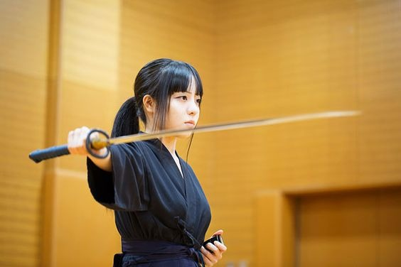
The concept of kendo is to discipline the human character through the
application of the principles of the katana (sword).
The purpose of practicing kendo is: To mold the mind and body,
To cultivate a vigorous spirit, And through correct and rigid training,
To strive for improvement in the art of kendo, To hold in esteem human courtesy and honour,
To associate with others with sincerity, And to forever pursue the cultivation of oneself.
This will make one be able: To love his/her country and society,
To contribute to the development of culture, And to promote peace and prosperity among all
peoples.
Rules of Kendo
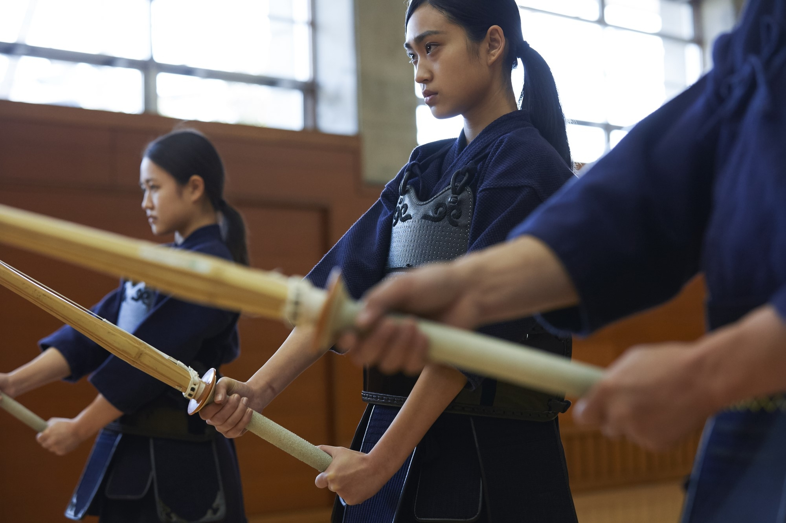
The yuko datotsu (possible score point) in a tai kai (Kendo match) is described as an accurate
thrust that is made right into the opponents kendo gu and a Shinai is used to make contact right
at the datotsu-bu; each of the competitors exhibit high and positive spirits, plus the proper
posture that is followed by the Zanshin. The datsu bui (point scoring targets) in a Kendo
tournament are detailed as follows:
Men-bu:
This point scoring target is the sho-men and the sayu-men which are basically the top or
sides of a kendokas head protector.
Kote-bu
A padded and protected spot which are the migi-kote and the hidari-kote specifically the areas
along the protective portion of the right or left wrist
Do-bu
The do-bu is a spot on the left or right side of the Kendo armor that protects the Kendokas
torso
(hidari-do and migi-do).
Tsuki-bu
It is a spot of the kendokas helmet that is located just in front of their throat the tsuki-dare
Additional Information
To find even more Information about Kendo, feel free to watch this video!
The Birth of the Nihonto
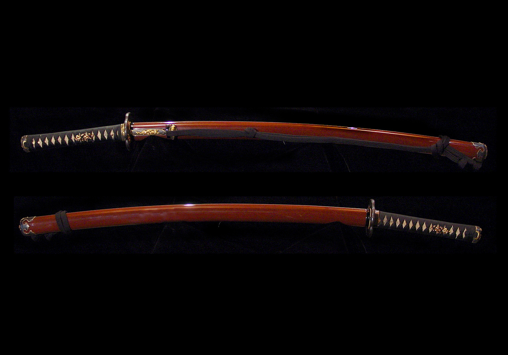
There are several fundamental points that cannot be overlooked in the history of kendo.
The first is the advent of the “nihonto”, or the Japanese sword. The Japanese sword emerged in
the
middle of the Heian period (794-1185), and had a slightly curved blade (sori) with raised ridges
along its length called “shinogi”. The prototypes of this style of sword were used by tribes
of horsemen in northern Japan during the 9th century. Since then, this style of sword was
adopted by samurai, and forging technology advanced rapidly during the early period of warrior
hegemony from around the end of the Kamakura period (1185-1333). The shape of the blade was
distinctive with its elevated sides (shinogi). In modern Japanese, the term “shinogi-wo-kezuru”
means “grinding the shinogi together”—in other words, “a tight contest”. Such is the influence
of
the ideals of the sword in Japanese culture.
The Muromachi Shogunate (1392-1573)
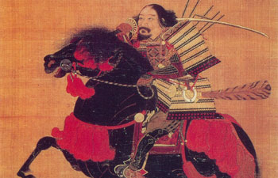
After the Onin War (1467-77), Japan experienced political and social chaos for over a century.
It was during this epoch that many schools of swordsmanship (kenjutsu) arose. In 1543, firearms
were introduced into the island of Tanegashima off the southern tip of Japan. The Japanese sword
was forged using the tatarafuki casting method using high quality iron sand. However, it did not
take long before this technology was applied to the production of firearms. As a result, the
heavily-armored fighting style that prevailed hitherto changed dramatically to a lighter
hand-to-hand
style of combat. This in turn resulted in the further development and specialization of sword
forging
technology, as well as the establishment of more refined techniques and skills of swordsmanship
which
have been handed down to the present day through various schools such as the Shinkage-ryu and
Itto-ryu.
The Edo Shogunate 1603-1867
During the peaceful Edo period in Japan (1603-1867), swordsmanship evolved from focusing on
killing techniques to
emphasizing concepts like "katsunin-ken" (the life-giving sword). This period saw the
development of theories for
victory in combat and guiding practitioners in leading disciplined lives. Various books, such as
Heiho Kadensho,
Fudochi Shinmyoroku, and Gorin-no-sho, elaborated on the art of warfare and spirituality,
influencing kendo to this day.
The works conveyed to the samurai how to apply swordsmanship in their daily lives and deal with
questions of life and
death. Samurai studied these writings to refine their bujutsu skills and cultivate their minds.
Swordsmanship focused
their minds on distinguishing good from evil and being prepared to make the ultimate sacrifice
for their clan and lord if necessary.
During this time, kenjutsu (sword techniques) in the Tokugawa period developed into graceful
techniques derived from
actual combat. Many masters contributed to the evolution of kendo, including Naganuma
Shirozaemon Kunisato and
Nakanishi Chuzo Kotake, who introduced new training methods and equipment such as protective
armor and the shinai
(bamboo-sword). Inter-school competitions became popular, and swordsmen traveled across the
country seeking stronger
opponents to improve their skills.
In the 19th century, new types of equipment, such as the yotsuwari shinai and the do (torso
protector), were introduced.
Three prominent dojos of Edo gained popularity for their full-contact fencing with bamboo swords
and protective armor.
Chiba Shusaku systematized the waza (techniques) of shinai training in the "Sixty-Eight
Techniques of Kenjutsu," many of
which are still used in kendo today. These developments contributed to the preservation of the
"bushido spirit" even after
the feudal system's collapse and continue to be an essential part of the Japanese culture.
Meiji Restoration (1868)
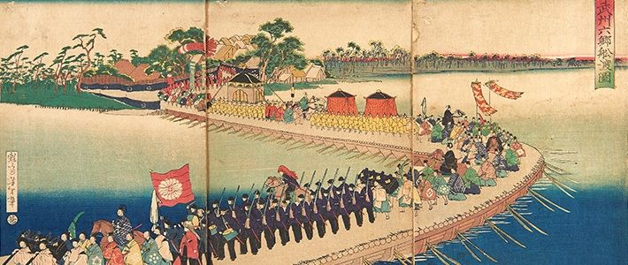
After the Meiji Restoration in 1868, the samurai class was dismantled. The wearing of swords was
eventually prohibited and the popularity of kenjutsu declined dramatically.
Although shunned as outdated and useless in the theatre of modern warfare, various events during
the Satsuma Rebellion of 1877—an unsuccessful resistance movement of samurai against the newly
formed imperial government—led to a revival of traditional swordsmanship among government forces
and the national police agency as means for effective physical training. In 1895, the Dai-Nippon
Butokukai was established as a national umbrella organization to promote traditional martial
arts
in the modern era. This coincided with the publication of Nitobe Inazo's world famous treatise
in
English, Bushido: The Soul of Japan, which addressed the culture and philosophy of the samurai.
First Year of the Taisho Period (1912)
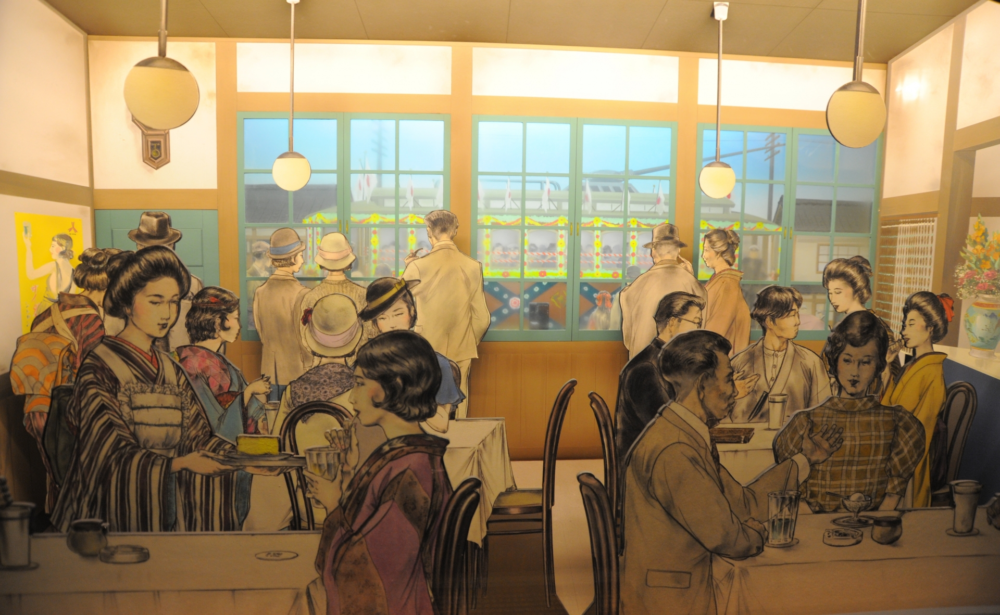
In 1912, the “Dai-Nippon Teikoku Kendo Kata” (later renamed to Nippon Kendo Kata) was
created to unify classical schools of swordsmanship and pass on the essence and techniques
of the Japanese sword to later generations. It was also to supplement training with bamboo
replicas, and make kendo training more realistic. In 1919, Nishikubo Hiromichi officially
changed the designation of “bujutsu” and “kenjutsu” to “budo” and “kendo”. Replacing the
suffix of “jutsu” (technique or art) with “do” (Way) was meant to accentuate the educational
and spiritual aspects of kendo, rather than the technical or competitive side.
After Defeat in World War II
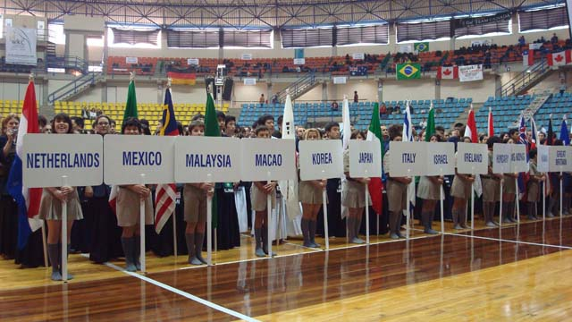
After the Second World War, kendo was prohibited for a while under the Occupation of the
Allied Forces. In 1952, however, when the All Japan Kendo Federation was established, kendo
was formally resurrected. Kendo presently plays an important role in school education and
is also popular with people of all ages and walks of life. Several million kendo practitioners
enjoy participating in regular sessions of keiko (kendo training).
Furthermore, kendo is gaining interest all around the world. The International Kendo
Federation (FIK) was established in 1970 and the first triennial World Kendo Championships (WKC)
was held in the Nippon Budokan in the same year. The 17th World Kendo Championships were held in
Incheon, South Korea, in September 2018 with competitors from 56 countries and regions
participating.
The 18th World Kendo Championships is scheduled to be held in Villebon-sur-Yvette, France, in
May 2021.
Additional Information
To find more about the history of kendo, feel free to watch this video!
Chūdan-no-kamae
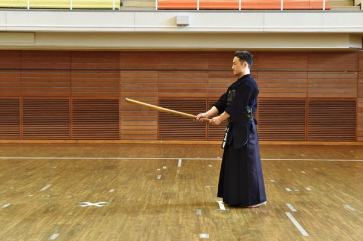
Chūdan-no-kamae is one of the five stances in kendo: jōdan, chūdan, gedan, hassō, and waki.
It is a basic stance that balances attack and defense, concealing the trunk and right wrist from
the opponent.
The stance allows for striking distance while maintaining good defense and is essential for
learning the
correct striking distance (issoku-ittō-no-maai).
In Chūdan-no-kamae, the left foot is slightly behind the right with the left heel slightly
raised.
Both feet are parallel, hips are forward, shoulders are relaxed, and the spine is perpendicular
to the floor.
The center of gravity should be centered between both feet. The shinai is held with the hands in
front of the waist,
with the tip of the weapon pointed at the opponent's throat.
Gedan-no-kamae
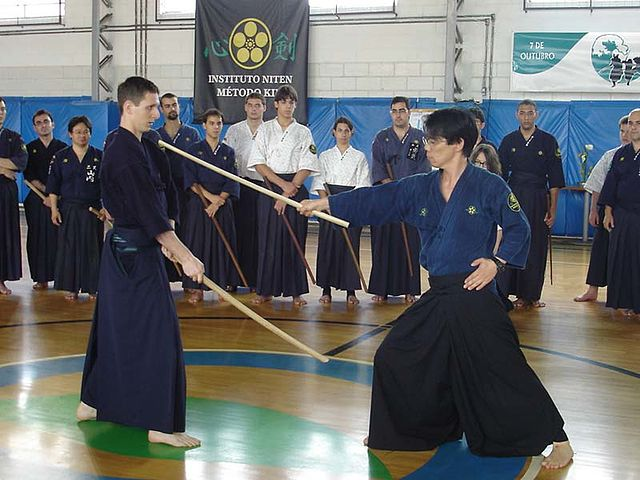
Gedan-no-kamae is one of the five stances in kendo: jōdan, chūdan, gedan, hassō, and waki.
It is a lower-level posture held in front of the body pointing at the waist, knee, or ankle,
used for deflecting
blows and creating striking opportunities. It is a transition stance used to move into a
thrusting attack (tsuki).
Gedan-no-kamae is also known as the Kamae of Earth in Yagyū Shinkage-ryū.
Hassō-no-kamae
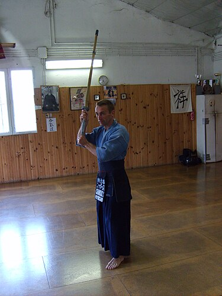
Hassō-no-kamae is one of the five stances in kendo: jōdan, chūdan, gedan, hassō, and waki.
It is an offensive stance that allows the swordsman to respond in any direction. It involves the
left foot being
forward, holding the sword upright with the hilt in front of the right shoulder, and the blade
sloping slightly
to the rear. This stance is mainly used in kata.
Jōdan-no-kamae
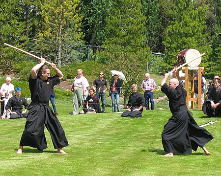
Jōdan-no-kamae is one of the five stances in kendo: jōdan, chūdan, gedan, hassō, and waki.
It is an aggressive stance with the sword raised above the head, ready for a strike. There are
left (hidari)
and right (migi) variations, and it requires a fiery spirit to protect the open and vulnerable
areas.
Jōdan-no-kamae is called the Kamae of Heaven in Yagyū Shinkage-ryū and the Kamae of Fire in
Shinkage-ryū.
Waki-gamae
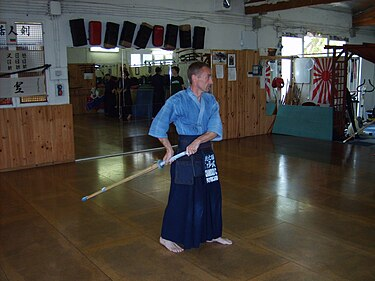
Waki-gamae is one of the five stances in kendo: jōdan, chūdan, gedan, hassō, and waki.
It involves the swordsman hiding the length of their blade behind their body, exposing only the
pommel to the opponent.
This stance was commonly used when there was no standard sword length, serving as a bluff
technique and concealing
the orientation of the blade from the opponent.
Waki-gamae is also known as the Kamae of Metal in the five elements classification and the Light
Stance in Ittō-ryū teachings.
Additional Information
Now that you know the rules and origins of kendo, feel free to watch the video to see what
competitive Kendo looks like!